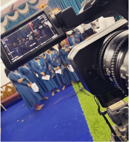

Hello! I’m Alex
What made me a UI/UX designer
My interest in design sparked during my early teens, inspired by designers I met at my church. I fell in
love with designing and started practicing whenever the designers weren't around. One day, I got the
chance to design a YouTube thumbnail because they needed extra help, and that experience changed everything
for me.
When I got to college, I learned about UI/UX designing. Because I enjoyed designing so
much, I decided to focus on learning UI/UX design. This caught the attention of my teachers, and they chose
me to design a website for an event called TECHUTSAV. Working on that project gave me a lot of
experience.
Later on, I was given another big opportunity to contribute to a major project at SRM
University. These experiences made me even more passionate about UI/UX design and inspired me to keep
learning.
Why UI/UX designing ?
In the past, coding was my jam! I loved figuring out puzzles with programming languages and building things with code. But then I stumbled upon the world of UI/UX design, and it was like a match made in heaven. It turns out, UI/UX design lets me use my creative side for design, while also keeping some of that technical problem-solving I enjoy. It was like finding a way to combine my two passions into one awesome career path. So, I decided to ditch the pure software engineer route and dive head first into the world of UI/UX design!
Beyond UI/UX: What Else Ignites My Creativity?
In addition to loving UI/UX design, I get a kick out of planning events! It all started in high school as a student leader, where I organized stuff. That experience made me love event planning, and it came in handy later in college when I helped out with a huge national event called Techutsav. I'm good at staying calm under pressure, so even when things get crazy, I can handle it. But wait, there's more! I also dabble in photography. I took pictures at another national event, Milan, and even designed some social media posts for them.
Moving forward, I want to collaborate with other designers to create intuitive digital experiences that give all users confidence and delight.
Where can you find me when i’m off ?

at church
behind the cam
mixing
in my bed
Thank you for your interest in my work. Let’s connect!